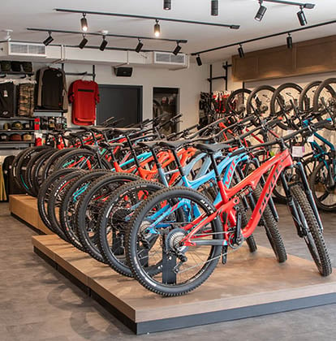

This data exploration project uses SQL
to analyze COVID-19 data from the World
Health Organization.
The project focuses on identifying trends
and patterns in the data related to risk, mortality rates,
and vaccination rates. By leveraging the power of SQL,
this project provides valuable insights into the COVID-19
pandemic that can inform public health decision-making
and help shape effective interventions.This porfolio showcases
how I have applied my data analysis skills to health data and data
from other relevant fields.

This project is an exploratory data analysis
of a fictitious dataset for a restaurant called
'Cool Cats,' which is an online electronic store. This analysis was carried out in R

In this analysis, I examined the trends and patterns
of bike sales in Europe using Microsoft Excel. I
gather and organize data from a bike store and used Excel's
powerful features to perform data cleaning, manipulation, and
visualization

In this project, I worked with a Biostatistian and a Public Health Professional to develop a predciction model for ICU mortality due to Covid-19. This project demonstrates my research, report writing and data science skills, and experience working in a team.